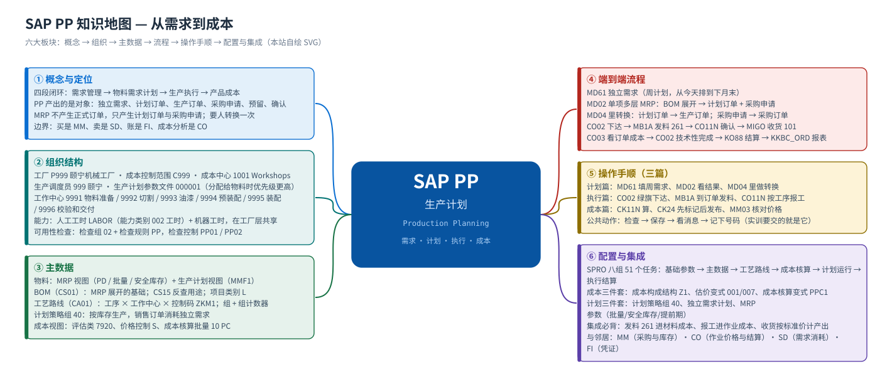

首页 · 课程地图与学习路线
PP 管什么 · 怎么学 · 学完能做什么
PP（生产计划）管的是「企业的东西怎么造出来」：需求从哪来（独立需求）、造多少什么时候造（MRP 与计划订单）、车间怎么干（生产订单的下达、发料、报工、收货）、最后花了多少钱（标准成本、订单实际成本与差异结算）。本站按「概念 → 组织 → 主数据 → 端到端流程 → 分步操作手顺 → SPRO 配置 → 实训」讲，每个环节都配教材原书的真实 SAP GUI 画面。
14页课程页数
51个任务教材 PP 全部任务，逐个走查
220步手顺步骤（含截图）
425处实机截图引用
学习路线：从需求到成本
① 概念PP 管什么、和谁交接→② 组织工厂 / 调度员 / 工作中心→③ 主数据BOM / 工艺路线 / MRP 视图→④ 流程需求 → MRP → 订单 → 结算→⑤ 操作手顺计划 · 执行 · 成本→⑥ 配置SPRO 51 个任务→⑦ 实训五个动手任务→⑧ 自测30 题 · 合格 75%
建议的学法先看 概念 弄清「哪些是计划、哪些是执行、哪些是账」，再按 组织 → 主数据 把数据坐标立起来，然后走一遍 端到端流程；最后拿 计划、执行、成本 三篇当操作手册，在系统里照着做；配置篇 是后台的完整索引。
模块地图
{kind=link}

六大板块
① 概念与定位四段闭环（需求 / 计划 / 执行 / 成本）、对象与凭证清单、与 MM/CO/SD/FI 的分界、12 个常见误解
② 组织结构工厂 P999、成本控制范围 C999、生产调度员 999、工作中心 9991–9996、能力与可用性检查
③ 主数据BOM（CS01）、工艺路线（CA01）、工作中心（CR01）、能力（CR11）、物料 MRP / 生产计划视图
④ 端到端流程MD61 独立需求 → MD02 MRP 展开 → 计划订单 → 生产订单 → 发料·报工·收货 → 成本与差异
⑤ 操作手顺三篇局部详解：计划（MRP 与转换）、执行（下达/发料/确认/收货）、成本（CK11N→CK24→KO88）
⑥ 配置与实训SPRO 51 个任务（IMG 路径 + 手顺 + 截图）、五个实训、30 题自测
集成关系：PP 是中游

| 邻居模块 | 给它（PP 提供） | 它给 PP | 典型凭证/接口 |
|---|---|---|---|
| MM 物料管理 | MRP 产生的采购申请（原材料的非独立需求，教材任务 36/39） | 原材料库存与到料进度、物料主数据与评估、采购与收货功能 | 采购申请 PurRqs → 采购订单；收货/发料共用物料凭证（MIGO / MB1A） |
| CO 管理会计 | 作业量（报工工时）、订单实际成本与差异（任务 44/46/48） | 作业类型与价格（KP26）、成本中心、结算规则、差异科目 | 确认凭证 → 作业成本；KO88 结算凭证；KKBC_ORD 成本报表 |
| SD 销售与分销 | 可用库存与 ATP 确认、按库存生产的可承诺量 | 销售订单需求（消耗独立需求，计划策略组 40）、交货需求 | 计划策略 40：销售订单消耗 PIR；发货 601 在 MM/SD 侧 |
| FI 财务会计 | 触发记账的业务动作（发料、收货、结算） | 总账科目、自动记账规则（OBYC）、会计期间 | 物料凭证牵动的会计凭证（BKPF/BSEG） |
教材场景（颐宁公司）
本站所有示例值都来自教材《S4.docx》PP 模块的画面，不是标准值 —— 换到自己的系统请按页面里写的「怎么确认」核对。
| 对象 | 教材值 | 说明 |
|---|---|---|
| 公司代码 | C999 | 教材画面里显示为「颐宁机械有限公司」 |
| 工厂 | P999 | 颐宁机械工厂（生产与库存场所） |
| 成本控制范围 | C999 | 与公司代码同码；工作中心的成本核算链到它 |
| 生产调度员 | 999 生产调度员颐宁 | 任务 02 定义；物料主数据 MRP 视图里分配 |
| 生产计划参数文件 | 000001 | 任务 01 用复制的方法从 1000 工厂带出 |
| 工作中心 | 9991 物料准备 · 9992 切割 · 9993 油漆 · 9994 预装配 · 9995 装配 · 9996 校验和交付 | 任务 12（人工工时）/ 任务 13（机器工时） |
| 控制码 | ZKM1 | 颐宁工作中心控制码（任务 09） |
| 能力 | 人工工时能力 LABOR（能力类别 002 工时）· 机器工时能力 | 任务 10/11 在工厂层统一维护，再分配给各工作中心 |
| 产成品 | F999-100 铸钢泵 170-230 | 物料类型 FERT；评估类 7920；价格控制 S（标准价） |
| 原材料 | R999-100 罩壳 · R999-200 飞轮 · R999-300 管轴 · R999-400 支撑架 · R999-500 金属片 | BOM 的组件（项目类别 L） |
| 贸易商品 | T999-100 | 外购转卖，收货到库存地点 0003 运输库 |
| 供应商 | 10000000（与 R999-500 配对）· 10000001 长平铁工厂（R999-200，净价 420.00 元 / 20 PC）· 20000000（T999-100，采购组 PG2） | 任务 39 在 MD04 里把采购申请转成采购订单 |
| 成本构成结构 | Z1 颐宁成本组件结构 | 有效期 01.01.2021；任务 17 |
| 成本核算变式 | PPC1（复制）· 数量结构控制 PC01 · 估价变式 001（物料计划）/ 007（订单实际成本） | 任务 18–21 |
| 成本核算批量 | 10 PC | 从产成品主数据的成本视图 1 传递过来（任务 22 画面） |
| 生产订单 | 1000013（F999-100 / 100 PC / 类型 PP01） | 由计划订单转换而来（任务 37），任务 42 下达 |
| 可用性检查 | 检查组 02 + 检查规则 PP；检查控制 PP01/PP02 | 任务 29–31；用复制模板工厂 0001 的方式维护颐宁工厂 |
代表性画面（先建立整体印象）
下面六张是教材原书 PP 主线上的关键画面，按「主数据 → 需求 → 计划 → 执行 → 成本」排列；后面每一页都会逐屏展开（每张图都带「画面 N」编号与原图文件名）。


怎么用这个站
- 带「画面 N」编号的图 = 教材原书的 SAP GUI 实机截图（中文界面），图注里保留原图文件名，可回 Word 原稿逐张核对。
- 图注写「本站自绘 SVG」的 = 我们画的流程图/结构图/思维导图，用于讲清结构与顺序；图上的数值是课程场景值。
- 每页底部都有「其他模块」的入口；顶部横条可以在 MM / PP / FI / CO 与总览之间跳转。
- 配置篇的每个任务都给出「IMG 路径 + 手顺步骤 + 教材画面」，路径可以点击左侧小图标复制。